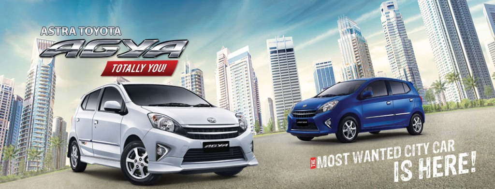
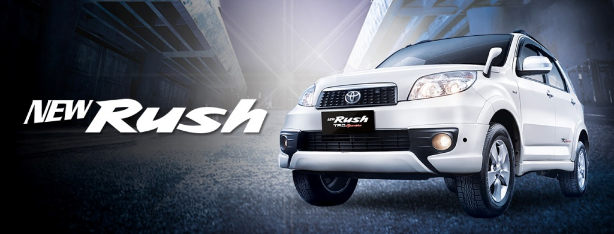

-

Desain eksterior yang jauh lebih gagah dan modern dari versi sebelumnya untuk memberi Anda kepuasan akan estetika..
-

Hemat baha bakar karena tekonlogi mesin baru yang green dan tentunya karena cc lebih kecil, dimana 1 liter bisa untuk 20 km..
-

Kini hadir dengan tampilan lebih agresif dan memberikan tersendiri saat mengendarai. Sebuah performa berkendara paling berkualitas di kelasnya..
-

Temukan ekspresi kebebasan yang terpancar dari setiap detail eksteriornya. Saat mengendarai Toyota Rush, siapapun akan menoleh untuk mengaguminya..
Saya Riduan, seorang Sales Executive di Auto 2000. Dealer Resmi TOYOTA di Samarinda/Tenggarong Kalimantan Timur.
Website ini kami persembahkan bagi Anda yang ingin cepat mengetahui produk terbaik Toyota. Berbagai info bisa Anda dapatkan
mulai dari spesifikasi dan type mobil, promo, diskon, proses kredit
maupun tunai bahkan bagi Anda yang ingin menjual unit lama Anda. Selengkapnya....
Copyright © 2014 Toyota / Auto2000 Berau
Website ini hanya sebagai sarana informasi dan pemasaran mobil Toyota dan bukan website resmi dari Toyota Astra Motor ataupun Auto2000.

 muh.khallad@gmail.com
muh.khallad@gmail.com 76944C3B
76944C3B